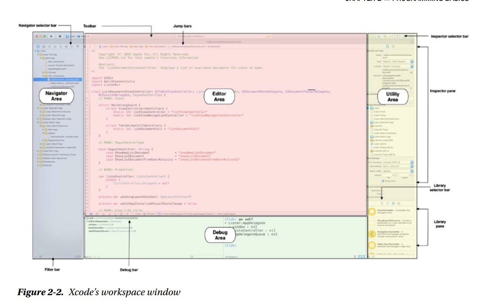

Xcode y los playgrounds hacen que escribir código Swift sea increíblemente simple y divertido. Escriba una línea de código y el El resultado aparece instantáneamente inmediatamente. Si su código se ejecuta durante un período de tiempo, como un bucle o rama, puede ver su progreso en el área de la línea de tiempo. Cuando haya completado su código en el patio de recreo, es fácil mover su código para un proyecto de iOS Swift. Con los parques infantiles Xcode, puede hacer lo siguiente:
La interfaz de usuario de Xcode está configurada para ayudarlo a escribir eficientemente sus aplicaciones Swift. La interfaz de usuario ayuda a los nuevos programadores a aprender la interfaz de usuario para una aplicación iOS. Ahora explorarás los principales secciones del espacio de trabajo IDE de Xcode y playgrounds
La ventana del espacio de trabajo, que se muestra en la Figura 2-2, le permite abrir y cerrar archivos, configurar su aplicación preferencias, desarrollar y editar una aplicación, y ver la salida de texto y la consola de error.
